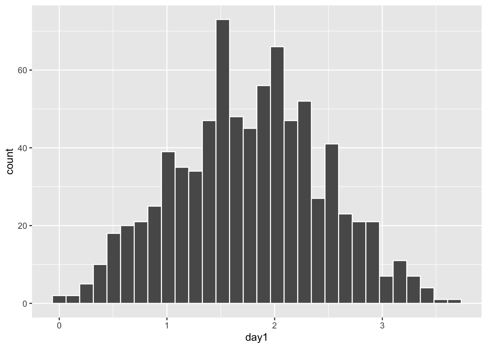
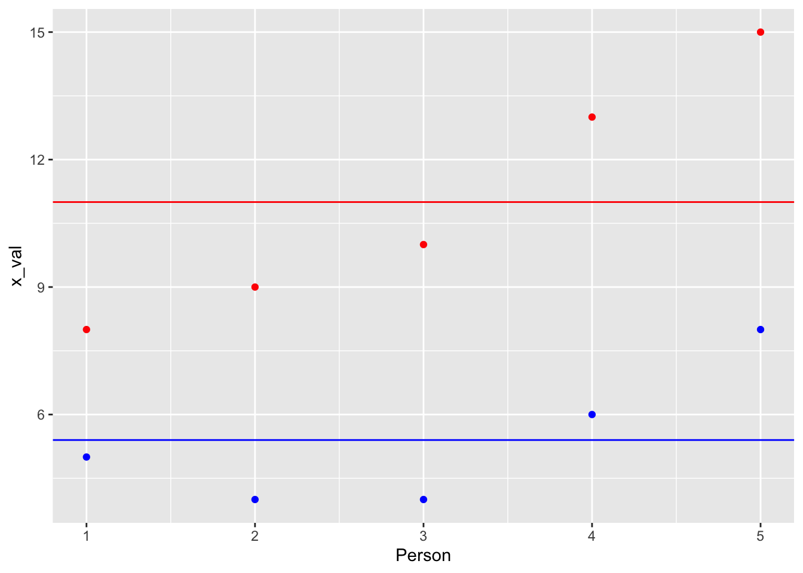
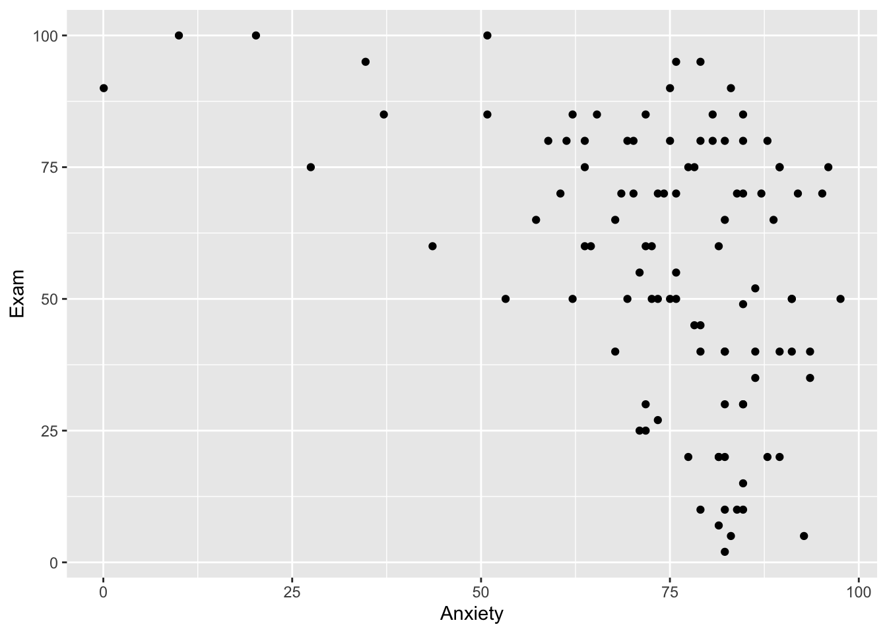
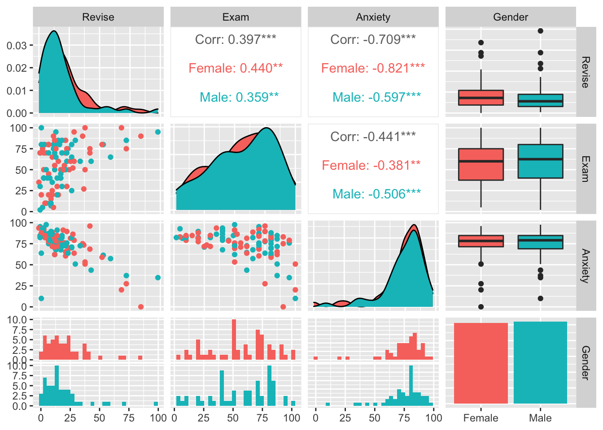
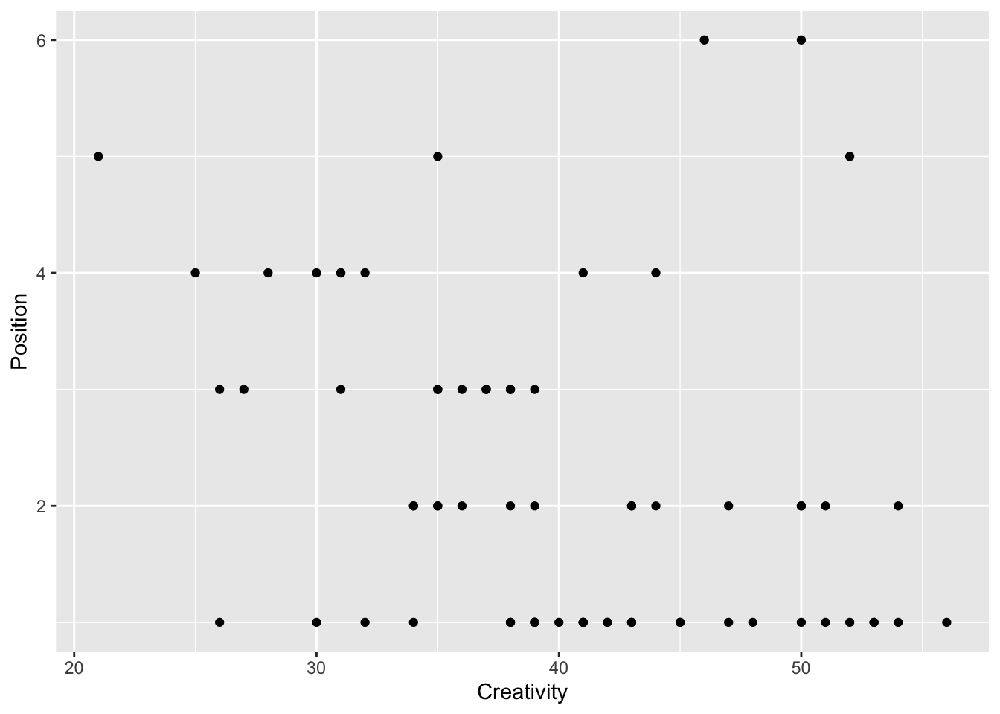

T13_Correlación_Covarianza
Fecha de la ultima revisión
## [1] "2023-07-10"

Correlations and covariance
library(readr)
DownloadFestival <- read_csv("Data_files_csv/DownloadFestival.csv")
dlf=DownloadFestival #use shorter data.frame names to make your life easier.....
head(dlf)## # A tibble: 6 × 5
## ticknumb gender day1 day2 day3
## <dbl> <chr> <dbl> <dbl> <dbl>
## 1 2111 Male 2.64 1.35 1.61
## 2 2229 Female 0.97 1.41 0.29
## 3 2338 Male 0.84 NA NA
## 4 2384 Female 3.03 NA NA
## 5 2401 Female 0.88 0.08 NA
## 6 2405 Male 0.85 NA NA## # A tibble: 6 × 5
## ticknumb gender day1 day2 day3
## <dbl> <chr> <dbl> <dbl> <dbl>
## 1 4749 Female 0.52 NA NA
## 2 4756 Female 2.91 0.94 NA
## 3 4758 Female 2.61 1.44 NA
## 4 4759 Female 1.47 NA NA
## 5 4760 Male 1.28 NA NA
## 6 4765 Female 1.26 NA NA## ticknumb gender day1 day2
## Min. :2111 Length:810 Min. : 0.020 Min. :0.0000
## 1st Qu.:3096 Class :character 1st Qu.: 1.312 1st Qu.:0.4100
## Median :3620 Mode :character Median : 1.790 Median :0.7900
## Mean :3616 Mean : 1.793 Mean :0.9609
## 3rd Qu.:4155 3rd Qu.: 2.230 3rd Qu.:1.3500
## Max. :4765 Max. :20.020 Max. :3.4400
## NA's :546
## day3
## Min. :0.0200
## 1st Qu.:0.4400
## Median :0.7600
## Mean :0.9765
## 3rd Qu.:1.5250
## Max. :3.4100
## NA's :687
## # A tibble: 6 × 5
## ticknumb gender day1 day2 day3
## <dbl> <chr> <dbl> <dbl> <dbl>
## 1 2111 Male 2.64 1.35 1.61
## 2 2229 Female 0.97 1.41 0.29
## 3 2338 Male 0.84 NA NA
## 4 2384 Female 3.03 NA NA
## 5 2401 Female 0.88 0.08 NA
## 6 2405 Male 0.85 NA NAA detour in the Murky world of covariance
The objective is to evaluate whether variables covary, that is if the variable explain in part the part of the other.
| Advert watched | 5 | 4 | 4 | 6 | 8 |
|---|---|---|---|---|---|
| Packets bought | 8 | 9 | 10 | 13 | 15 |
Understanding covariance one needs to understand variance equation.
[Variance of single variable] \[s^{ 2 }=\frac { \sum { { ({ x }_{ i }-\bar { x } ) }^{ 2 } } }{ n-1 }\]
While the Covariance is the cross product of the deviation
[Covariance] \[cov(x,y)=\frac { \sum { ({ x }_{ i }-\bar { x } _{ i })({ y }_{ i }-\bar { y } _{ i }) } }{ n-1 } \]
x_val=c(5,4,4,6,8)
y_val=c(8,9,10,13,15)
Person=c(1,2,3,4,5)
meanx=mean(x_val)
df=data.frame(Person,x_val,y_val)
df## Person x_val y_val
## 1 1 5 8
## 2 2 4 9
## 3 3 4 10
## 4 4 6 13
## 5 5 8 15ggplot(df)+
geom_point(data=df, aes(x=Person,y=x_val),colour="Blue")+
geom_point(data=df,aes(x=Person,y=y_val), colour="red")+
geom_hline(aes(yintercept=mean(df$x_val)),colour="Blue")+
geom_hline(aes(yintercept=mean(df$y_val)),colour="red")
Because in most cases variables are collected having different measurement scales we have to standardize using the standard deviation
Thus we have to use the Correlation Coefficient:
This most common is the Pearson product-moment correlation coefficient or Pearson correlation coeffcient.
\[r=\frac { cov(x,y) }{ { s }_{ x }{ s }_{ y } } =\frac { \sum { ({ x }_{ i }-\bar { x } _{ i })({ y }_{ i }-\bar { y } _{ i }) } }{ n-1{ s }_{ x }{ s }_{ y } }\]
The function to calculate the correlation coefficient is “cor”
The function to determine if the correlation vetween the 2 variables is significant (in other words, different from zero) is “cor.test”.
## [1] 0.8711651##
## Pearson's product-moment correlation
##
## data: df$x_val and df$y_val
## t = 3.0732, df = 3, p-value = 0.05443
## alternative hypothesis: true correlation is not equal to 0
## 95 percent confidence interval:
## -0.0479747 0.9914236
## sample estimates:
## cor
## 0.8711651The correlation of coefficient square \({ R }^{ 2 }\) (known as the coefficient of determination) is a measure of the amount of variability in one variable that is shared by the other.
Simple table of correlation tests
- Pearson test, assumes normal bivariate distribution,
- Spearman test, no assumption of normality,
- Kendall test, no assumption of normality, better when sample size are small
Let us a look at Anxiety and exam results.
Choose the data set, examData
library(readr)
Exam_Anxiety <- read_csv("Data_files_csv/Exam Anxiety.csv")
examData=Exam_Anxiety
head(examData)## # A tibble: 6 × 5
## Code Revise Exam Anxiety Gender
## <dbl> <dbl> <dbl> <dbl> <chr>
## 1 1 4 40 86.3 Male
## 2 2 11 65 88.7 Female
## 3 3 27 80 70.2 Male
## 4 4 53 80 61.3 Male
## 5 5 4 40 89.5 Male
## 6 6 22 70 60.5 Female
##
## Pearson's product-moment correlation
##
## data: examData$Exam and examData$Anxiety
## t = -4.938, df = 101, p-value = 3.128e-06
## alternative hypothesis: true correlation is not equal to 0
## 95 percent confidence interval:
## -0.5846244 -0.2705591
## sample estimates:
## cor
## -0.4409934One the basic assumption of the Pearson correlation is that the data be bivariate normally distributed. NOTE: WHAT WE MEAN ABOUT THE “ASSUMPTION” IS THAT WE ARE CONFIDENT THAT THE UNIVERSE IS NORMALLY DISTRIBUTED, NOT NECESARILY THAT OUR DATA ARE (SUBSET).

What does that mean
Here is a really cool graph that does the figures and most of the analysis in one one shot. The package GGally, if you omit “ggplot2::aes(colour=Gender)”, the figure will be black and white, and not seperated by gender.
## # A tibble: 6 × 5
## Code Revise Exam Anxiety Gender
## <dbl> <dbl> <dbl> <dbl> <chr>
## 1 1 4 40 86.3 Male
## 2 2 11 65 88.7 Female
## 3 3 27 80 70.2 Male
## 4 4 53 80 61.3 Male
## 5 5 4 40 89.5 Male
## 6 6 22 70 60.5 Female
In this code I removed the first column, which is just the code of the individual, by examData[,c(2:5)], by removing column #1.

USar el data set siguiente
con las variables,
- Flower Size
- Num_Fr = Number off Fruits
- w_sepals_dorsal = width of the dorsal sepal
- front_lip_length = Front lip length
- wf = an index of female selection
library(readr)
Lep_rupPetal_All_Data <- read_csv("Data_files_csv/Lep_rupPetal_All_Data.csv")
Lep=Lep_rupPetal_All_Data
names(Lep)## [1] "Plant_Number" "Petal_Character" "Population" "Num_FR"
## [5] "Sqrt_NumFR" "Rank_Fruits" "Num_PR" "Num_PP"
## [9] "Perc_PR" "Perc_FR" "Num_flowers" "wm"
## [13] "wf" "Nfl stand to 1 V" "L_column" "X2_ L_column"
## [17] "Flower_size" "w_sepals_dorsal" "Lpostpetallobe" "wpostpetallobe"
## [21] "lantpetallobe" "front_lip_length" "front_lip_lenght" "Front_lip_width"
## [25] "midlobe_lenght" "anther_cap_open" "dist_b_w_sepals" "ST_L _column"
## [29] "w_mf" "ST_L_column2" "Sqrt_Num_Fl0.5" "Log_flower size"
## [33] "Arcsin_Perc_FR"A table of the correlation coefficients
## Exam Anxiety Revise
## Exam 1.00 -0.44 0.40
## Anxiety -0.44 1.00 -0.71
## Revise 0.40 -0.71 1.00
##
## n= 103
##
##
## P
## Exam Anxiety Revise
## Exam 0 0
## Anxiety 0 0
## Revise 0 0When the data do not comply with the assumption of normality you need to use Spearman or Kendall
Choose “The Biggest Liar.csv” data set, contest, where this occurs every year in a pub.
World’s Biggest Liar is an annual competition for telling lies, held in Cumbria, England at the Stanton Inn Bridge Pub.

library(Hmisc)
library(readr)
The_Biggest_Liar <- read_csv("Data_files_csv/The Biggest Liar.csv")
liarData=The_Biggest_Liar
head(liarData)## # A tibble: 6 × 3
## Creativity Position Novice
## <dbl> <dbl> <dbl>
## 1 53 1 0
## 2 36 3 1
## 3 31 4 0
## 4 43 2 0
## 5 30 4 1
## 6 41 1 0## [1] -0.3060314## [1] -0.3732184## [1] -0.3002413EXTRA Stuff
Bootstrapping Correlation
THERE is no need to make assumptions of the distribution, you can let your data speak for itself, and construct the correlation coeffcients and 95% confidence interval.
We first create a function
bootTau=function(liarData,i)cor(liarData$Position[i],liarData$Creativity[i],
use="complete.obs",method = "kendall")The function is then called and executed
To calculate the 95% confidence interval
